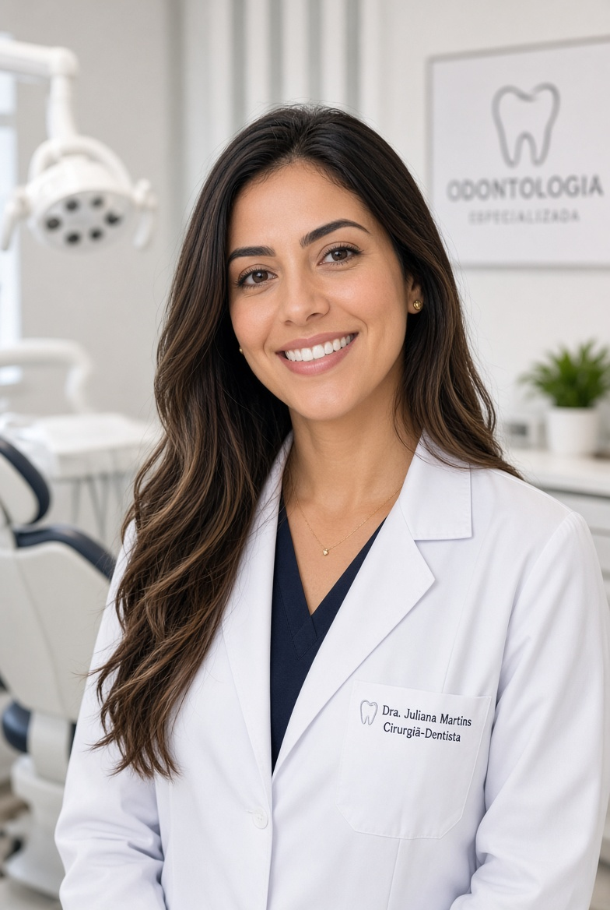

Dra. Grassiele Magalhães
Cirurgiã-dentista · Campo Grande, MS · MS-CD-8127

Cirurgiã-dentista formada pela Universidade Federal do Mato Grosso do Sul (UFMS). Registro profissional MS-CD-8127.
Atua há mais de uma década com foco em atendimento humanizado, prevenção e reabilitação estética e funcional. Cada paciente é único. O planejamento considera saúde, expectativas e rotina para oferecer um tratamento que faça sentido.
Depois da graduação, fez especialização em Prótese Dentária e cursos de atualização em Dentística e Harmonização Orofacial. Ao longo dos anos, priorizou o acompanhamento de perto, com explicação clara de cada etapa e respeito ao tempo e à realidade de cada pessoa.
Trabalha com restaurações estéticas, reabilitação de dentes desgastados ou ausentes, clareamento e prevenção personalizada. Acredita que o resultado bom é aquele que o paciente consegue manter no dia a dia, sem excesso de procedimentos desnecessários.
Atende com calma, escuta com atenção e monta o plano junto com o paciente, sem pressão de agenda. O objetivo é devolver função, conforto e confiança no sorriso, de forma segura e natural.